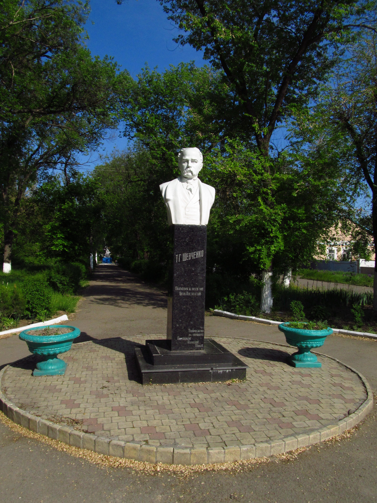
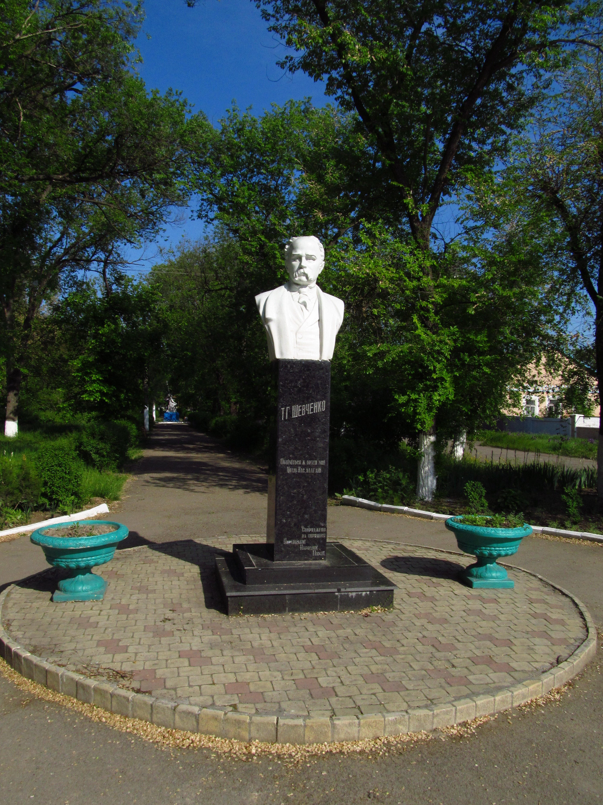

Арциз
Арци́з[4] (укр. Арциз) — город в Болградском районе Одесской области Украины,
административный центр Арцизской городской общины. До 2020 года являлся административным центром Арцизского района.
История
Арциз основан в 1816 году немецкими колонистами, переселившимися из Вюртемберга.
Немцы-переселенцы родом из Вюртемберга назвали свою колонию Йоханнесхорт — «крепость Иоанна».
Переименовали колонию в 1819 году по указу императора Александра I, повелевшего называть все немецкие и иные
переселенческие колонии в честь побед в войне с Наполеоном. Поселение получило название от французского города Арси,
около которого в марте 1814 года союзные войска (российские, австрийские и баварские) одержали победу над наполеоновской армией на речке.
Основным занятием переселенцев было сельское хозяйство. Выращивали пшеницу, кукурузу, ячмень; разводили крупный рогатый скот, овец, лошадей.
Особое значение имело виноградарство и садоводство. В начале XX века начинается развитие промышленности в городе.
В 1916 году в городе построена железнодорожная станция, паровозное депо и мастерские.
В 1945-50 гг были восстановлены после войны кирпичный и хлебный заводы, ткацкая фабрика, промкомбинат и мельницы.
В 1950-54 гг построены мясокомбинат, нефтебаза и автоколонна. В этот же период начинается бурный рост виноградарства.
В 1989 году численность населения составляла 20 240 человек[5].
Современность
19 апреля 1991 года исполком Арцизского горсовета утвердил герб города[uk]. Основа герба — варяжский геральдический щит с подножьем,
разделенный на три части двумя кривыми. В средней части на голубом фоне изображена цапля с камнем в лапе, символизирующая мир, дружбу и счастье,
а также бдительность (камень в лапе). Боковые поля — золотая лоза винограда на красном фоне — трудолюбие населения и плодородность земель.
Каменная кладка в основании щита символизирует монолитность всех национальностей, проживающих на территории района.
Кривая, разделяющая верхние секторы, — топографическое обозначение железной дороги — рост промышленности и технического оснащения города.
Красный цвет символизирует храбрость и мужество, голубой — красу и величие, золотой — богатство, справедливость и великодушие.[6]
В городе функционируют следующие крупные предприятия: завод железо-бетонных изделий, машиностроительный завод, опытно-экспериментальный литейно-механический завод,
газовое хозяйство, железнодорожное депо; молокозавод, хлебзавод, мясокомбинат, завод продтоваров, винзавод, элеватор. Работает 7 автозаправочных станций, 3 мельницы,
7 маслобоек, 2 коптильни, 2 пекарни. В городе находится более 300 предприятий торговли и около 80 — общественного питания.
Сельское хозяйство. Площадь угодий составляет 121.9 тыс. га, в том числе 99.1 тыс. га пашни и 6 тыс. га многолетних насаждений. 3 тыс. га пашни орошается.
Основные с/х культуры — пшеница, ячмень, подсолнечник, кукуруза. Большое значение имеет виноградарство.
Архитектура
Арцизская евангелическо-лютеранская приход (1899—1916)
В 1880 году немецкой общиной было построено и введено в эксплуатацию здание кирхи (лютеранская церковь). Средства собирали всей общиной. С появлением кирхи Арциз, кроме торгового центрам региона, стал ещё и религиозным (это была единственная кирха на весь тогдашний Буджак).
Здания
Арциз меняется — за последнее время расширились границы села, увеличилось количество населения. В течение 1950—1958 годов в городе было построено 600 домов, появились 44 улицы, застроенные новостройками,
в которых справили новоселье более тысячи семей. С появлением завода железобетонных изделий на окраине города вырос новый район с многоэтажными домами.
 Новые жилые дома в Арцизе построены с 1976 года. Одновременно были построены типовая школа на 960 учеников, детский сад на 280 мест, ясли, магазины, бытовые пункты.

В городе работают универмаг, 46 продовольственных и промтоварных магазинов, 2 ресторана, 10 столовых и кафе.
Новые жилые дома в Арцизе построены с 1976 года. Одновременно были построены типовая школа на 960 учеников, детский сад на 280 мест, ясли, магазины, бытовые пункты.

В городе работают универмаг, 46 продовольственных и промтоварных магазинов, 2 ресторана, 10 столовых и кафе.

Мосты
В 1940 году введен в эксплуатацию 76-метровый свайный мост через реку Когильник.
Население
По данным переписи населения Украины 2001 года распределение населения в Арцизе по родному языку (в % от общей численности населения):
русский — 66,51 %;
украинский — 22,57 %;
болгарский — 7,90 %;
молдавский — 1,48 %;
цыганский — 0,47 %;
гагаузский — 0,41 %;
армянский — 0,26 %;
белорусский — 0,09 %;
немецкий — 0,02 %;
польский — 0,01 %;
румынский — 0,01 %;
венгерский — 0,01 %;
врейский — 0,01 %;
греческий — 0,01 %.